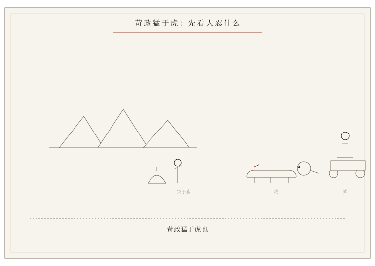

檀弓下 · 四·七十二 · 第 397 课
孔子过泰山侧，有妇人哭于墓者而哀。夫子式而听之，使子路问之，曰：「子之哭也，壹似重有忧者。」而曰：「然，昔者吾舅死于虎，吾夫又死焉，今吾子又死焉。」夫子曰：「何为不去也？」曰：「无苛政。」夫子曰：「小子识之，苛政猛于虎也。」
说什么事：孔子过泰山旁，见一妇人在墓上哭得极哀，在车上按轼倾听，命子路去问。妇人说：公公死于虎，丈夫又死于虎，如今儿子也死于虎。孔子问：为什么不走？答：这里没有苛政。孔子说：弟子们记住，苛政比虎还猛。
落在哪一层：以「宁与虎居」为界。妇人宁可三代死于虎，不肯去一个政苛之地。
为何编在此位：上与「畜狗死」「介夫死」诸条皆小哀，此条一跃而至「苛政猛于虎」，《檀弓》一篇之最重者在此。
【经】孔子过泰山侧，有妇人哭于墓者而哀。夫子式而听之，使子路问之，曰：「子之哭也，壹似重有忧者。」而曰：「然，昔者吾舅死于虎，吾夫又死焉，今吾子又死焉。」夫子曰：「何为不去也？」曰：「无苛政。」夫子曰：「小子识之，苛政猛于虎也。」
【注】怪其哀甚。／而犹乃也。夫之父曰舅。／苛音何，本亦作荷。识，申吉反。
【疏】此一节论苛政严于猛虎之事。○「子之哭也，壹似重有忧者」。○言子之哭也，壹似重叠有忧丧者也。「壹」者，决定之辞也。○「而曰然」者，而，乃也。妇人哭毕，乃答之曰「然」。「然」犹如是，是重叠有忧也。
泰山侧 泰山之傍。
哭于墓 在新坟前哭。
式 凭轼。轼为车前横木，式之为敬。
壹似 极像、甚似。「壹」为决定之辞。
重有忧 忧丧重叠，一重又一重。
而曰 乃答曰。
舅 夫之父，今谓公公。
去 迁徙离开。
苛政 政令繁苛。
识 记。
孔子经过泰山旁，有一位妇人在坟上哭得很哀。孔子扶着车轼倾听，命子路去问她：「您这样哭，很像是一重重悲伤叠在一起。」妇人便答：「是的。从前我的公公死于虎，我的丈夫又死于虎，如今我的儿子也死于虎。」孔子问：「为什么不离开这里呢？」答：「这里没有苛政。」孔子说：「弟子们记住，苛政比虎还要凶猛。」
此章为一场问答，四段：哭、式、问、答。
妇人答的是「三代死于虎」，孔子问的是「为何不去」，妇人答的是「无苛政」。
最后一句不是结论，是命令：「小子识之。」
第一层 「式而听之」 式是车上之敬：凭轼，俯身。
孔子所敬者，不是贵人，是一段哭声。 礼之敬，可以只对一段声音而发。
第二层 「壹似重有忧」：不敢即断 疏云「壹者，决定之辞」——但下一句是「似」。
「壹似」二字极妙：极像，而仍是「像」。 圣人问人，不肯替人把话说定。
第三层 三死一答 舅死、夫死、子死，三句同一句式。
礼在此记录了一种「重复的丧」：同一家人被同一物取走三次，而仍居其地。 这不是愚，是算过账。
第四层 「何为不去」 这一问是全章之转。
在礼的语汇里，「去」从来是正解。 上文言去国哭墓（384）、言违而去（392），礼许人去。故孔子此问，合乎礼。
第五层 「无苛政」三字 妇人不去，不是因为恋土，是因为比较过。
她把「虎」与「政」放在一处比，结论是虎轻。 这一句，比任何议论都重。
第六层 「苛政猛于虎」 孔子不说「苛政害民」，说「猛于虎」。
「猛」是体之感，「害」是理之断。 孔子取体之感，因为要让人记住的是那种怕。
第七层 「小子识之」 此四字是全篇的落点：不是评论，是让你们记住。
《檀弓》记此，正为「识之」。 一篇记丧礼之书，忽然记一条政论，是礼在自陈其界：礼所能治者，止于人事；政若苛，礼无所施。
与今日何干 今之人不肯迁，常被讥为守旧；实则人人都在算一笔「虎与政」的账。
此章给一句：先看人宁愿忍受什么，就知道什么最不能忍。
| 左 | 右 |
|---|---|
| 过泰山侧 | 途次 |
| 妇人哭于墓 | 新坟极哀 |
| 式而听 | 敬其声 |
| 壹似 | 极像而未断 |
| 三重忧 | 舅、夫、子 |
| 何为不去 | 礼许人去 |
| 无苛政 | 比较之后 |
| 苛政猛于虎 | 体之感 |
| 小子识之 | 命令，非评论 |
画一幅简略的山野场景，视点平视。画面左后画泰山：三道折线叠成山形，山不占满画面。山前平地上画一座新坟，坟为扁拱形，坟前立一妇人，双手掩面，身微俯。坟之右侧远处画一只虎，虎形只取轮廓：一条长身、四条短足、一条尾，不作细描，其大小与妇人相当。画面最左侧画一辆小车的侧面，车上立一人，双手扶车前横木、身体前倾。不画草木。不画文字。赭色只用在那只虎的背脊一线上。
